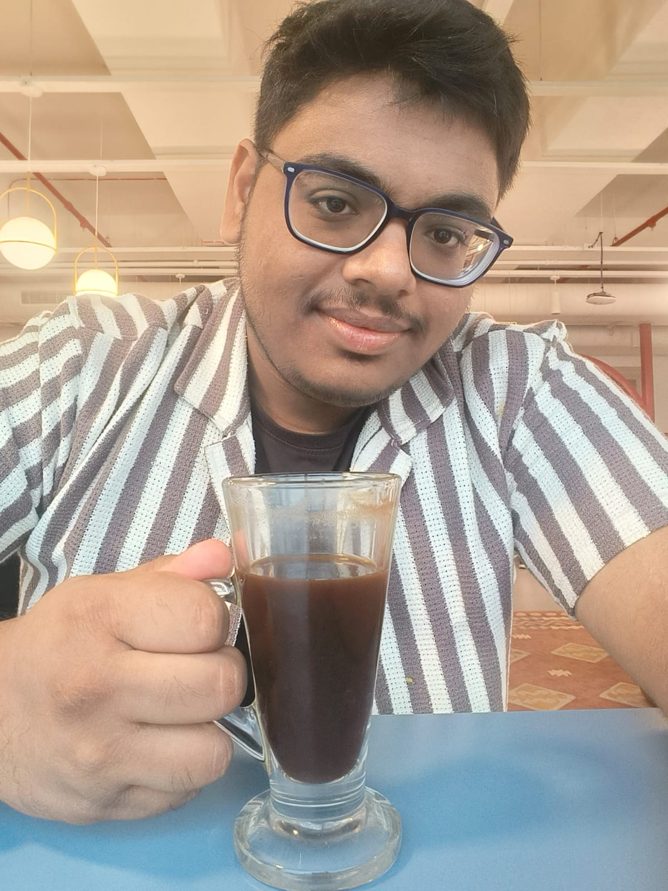

ChEABLOGS
Anupam Gaurav | LinkedIn
Hi, I am Anupam Gaurav, a B.Tech 4th year undergraduate from the Chemical department at IITB. I hail from Ranchi and just completed my internship here at LInkedIn Bangalore.
Q:What was your motivation for the internship and what was the recruitment process like?
I have been doing Competitive Programming since my first summer break. As a result, picking this internship was a no-brainer for me. Because I have been involved with competitive programming for so long, I felt quite prepared even before the recruitment.
Q: Can you explain your role in the internship? What jobs were you expected to perform and what projects were you involved with?
I was a SWE (Software Engineering) intern for the company. I worked on generative AI. The focus of the internship was on backend development in general. It also involved a little bit of langchain.
Q: What were the most exciting aspects of the internship? What were the most challenging aspects?
One of the most exciting aspects of the internship was that we were accommodated at Doubletree Suites by Hilton for the entire duration of the internship. This is a 5-star hotel in Bangalore, with rooms costing 15k rupees per day! The fact that we were working in the world’s leading professional social media community with such a huge scale was exciting in itself. I also won the intern hackathon and won a Meta Quest VR headset! This was definitely one hell of an experience. The only challenging aspect was that we were expected to learn new technologies and implement them right away.
Q: What was the culture like in your office? How did the company treat the interns and what were you provided with?
The office culture was perhaps the best part of the internship. The people were very friendly and inclusive, and there was hardly any workload. The positivity with which interns were treated was overwhelming, to say the least. The entire internship truly felt like a vacation.
Q: What were your key learnings from the internship?
I’d recommend devoting a substantial amount of time and effort to DSA, it is incredibly important for good development.... I personally got lucky because of my proficiency in CP. While focusing on problem solving is important, writing good quality code is also quite necessary. One aspect that people often neglect is communication. This skill is particularly handy in the tech industry.
I wish juniors the best of luck with their future coding endeavors.